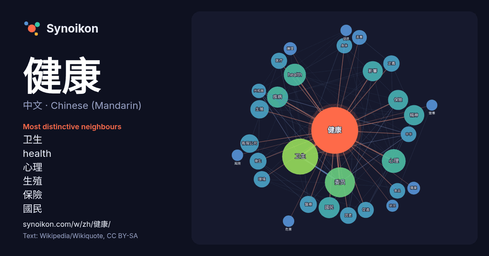

中文 · Chinese (Mandarin) · popular word
健康
“health” · The words found around it in 1711 instances from Chinese (Mandarin) Wikipedia, Wikiquote.

Most distinctive neighbours
- 卫生 102×
- health 56×
- 心理 43×
- 生殖 39×
- 保險 39×
- 國民 35×
- 疾病 33×
- 委员 29×
- 衛生 27×
- 素養 27×
- 促進 25×
- 医疗 25×
- 精神 24×
- 醫療 24×
- 身体 22×
- 食品 21×
- 有限公司 21×
- 定義 20×
- 因素 20×
- 護理 19×
× = how many times more often than in general Chinese (Mandarin) Wikipedia text.
Most frequent neighbours
- 卫生 160
- 委员 112
- 心理 70
- health 61
- 國民 55
- 疾病 55
- 精神 51
- 保險 50
- 国家 50
- 影響 50
- 人民 42
- 有限公司 42
- 生殖 42
- 管理 39
- 醫療 36
- 包括 35
- 衛生 35
- 因素 34
- 教育 34
- 生活 34
In context
- 健康是指生物的功能性和代謝效率的水平。 對人類而言，健康是指個人或群體面臨生理、心理或社會的挑戰時，適應及自我管理的能力。世界衛生組織於1946年6月22日WHO於紐約舉辦的健康大會，61國簽署並於1948年4月7月生效的WHO組織法序言（《世界衛生組織官方記錄》第2號第100頁）定義健康 Wikipedia snippets · 健康
- 職業安全健康（英語：Occupational Safety and Health）又稱職安健，內容研究和關注職業崗位上的安全問題，是職業安全與職業健康合稱。 職業安全，又名產業安全、工業安全，是職業健康下的一個分支（另一分支為職業衛生），是一種跨領域研究，橫跨自然與社會科學，包括職業醫學、公共衛生 Wikipedia snippets · 職業安全健康
- 中华人民共和国国家卫生健康委员会，标准简称国家卫生健康委，亦简称国家卫健委，是中华人民共和国国务院主管卫生和健康事务的组成部门。 国家卫生健康委员会主要负责拟订国民健康政策，协调推进深化医药卫生体制改革，组织制定国家基本药物制度，监督管理公共卫生、医疗服务、卫生应急，负责计划生育管理和服务工作，拟订应对人口老龄化、医养结合政策措施等。 Wikipedia snippets · 中华人民共和国国家卫生健康委员会
- 國民健康保險（英語：National health insurance，NHI），有時也被稱為法定健康保險（statutory health insurance，SHI），是一種醫療保險體系，提供給民眾，用來支付醫療衛生的成本。它可以由公共部門、或者是私營部門，或者是公私兩部門結合管理。籌措經費的 Wikipedia snippets · 國民健康保險
- 烟草中的尼古丁是一种让香烟高度上瘾的精神活性物质。從尼古丁生理作用來講，香菸毒品機理算是入門級的一種，不過由於社會與經濟原因可以合法取得。香烟對人類的健康有相當嚴重的危害，許多疾病都與吸菸有直接的關聯（如癌症、心血管疾病、中風、先天性障碍、慢性阻塞性肺病等）。仅在美国，每年就有近50万人因吸烟相关的原 Wikipedia snippets · 香菸
- 组织的努力和明智的选择来延长寿命和提高生活品質。根据对人口健康的分析，及其所面临的威胁是公共卫生的基础。公众可能只有少数几个人，也可能只有一个村庄或整个城市；在大流行病的情况下，它可能包括在世界各大洲。 许多机构对健康的定义有所不同。 健康的概念考虑到了身体的，心理的，和社会的福祉，因此，根据联合 Wikipedia snippets · 公共卫生
- 健康素養（Health literacy）也稱為健康識讀，是有能力獲得医疗卫生資訊，並且閱讀、理解，進而應用此資訊來進行健康相關的決定，也可以依照指示接受治療。有許多有關健康素養的定義。 健康素養是造成健康差距（英语：health disparities）的主要因素之一，越來越受到衛生專業單位的重 Wikipedia snippets · 健康素養
- 健康码（英語：Health Code）是2019冠状病毒病中国大陆疫情期间的定位追踪应用程序，作為個人的電子通行證使用。该码經讀取後可確認與證明持有人的健康情況，並以之出入需要出示該證明的場地。申请人通过填报个人信息健康状况、旅游史、居住地、及是否接触过疑似或确诊肺炎病患等问题，加上地方政府通过调取 Wikipedia snippets · 健康码
More Chinese (Mandarin) words
Precomputed on 2026-10-09 with default settings (±5 words, medium corpus). The interactive map can refresh it with live data.